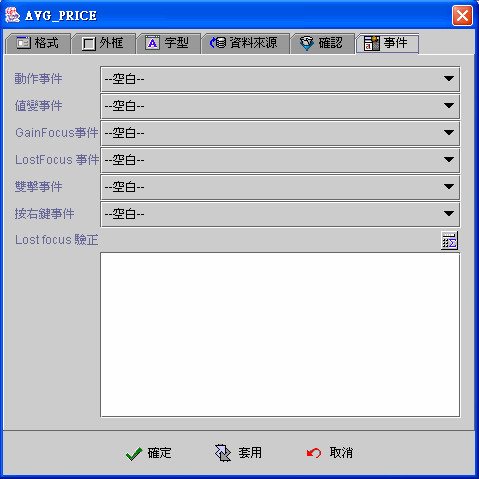

|

多行編輯方塊
(Multi-line Edit component)

共同屬性 (common properties)
資料來源 (data source)
事件 (event)
運算式屬性存取
(formula get/set properties)
多行編輯方塊元件 (Multi-line Edit)，通常使用於連結資料來源
(data
Source) 資料欄位 (data field) 的顯示 (display)、輸入 (input)、修改
(update) 的基本元件，其與編輯方塊元件
(Edit) 不同的是資料中可以存取換行文字 (\n) 或 (0d0a)。編輯元件亦可不連結資料欄位 (binding)，可將其當作多行文字編輯器。可串接事件以反應各種商業邏輯
(business logical) 的運作，例如：當元件內含值修改
時、按下
Enter 鍵時、元件 Gain Focus 時、元件 Lost Focus 時、雙擊滑鼠的左鍵時、按下滑鼠右鍵時，
則會啟動指定的相關事件程序。
資料來源
(data source)
-
資料來源 (data source)：資料來源
-
資料欄位 (data field)：資料來源內的資料欄位。
-
可編輯 (editable)：是否允許使用者編輯。
-
自動切換輸入法 (enable input method)：Focus
移至元件時，編輯方塊元件自動顯示切換為，使用者作業系統目前所使用的輸入法
(input method)。
-
Focus 加速器
(accelerator)：按下所要的快速鍵。應用程式執行時，使用者須按住
"ALT" 鍵+快速鍵，可以將
Focus 移至元件。
▲Top
事件 (event)
-
值變事件 (changed event)：當每次輸入值改變時，即引發事件
(fire event)，每一個按鍵輸入包括刪除鍵 (delete)
但不包括方向鍵，都會引發值變事件。
-
Gain Focus 事件：當 Focus 移入多行編輯方塊時，即引發事件
。
-
Lost Focus 事件：當
Focus 移出多行編輯方塊時，即引發事件
。
-
雙擊事件 (double clicked event)：當雙擊滑鼠的左鍵時，即引發事件。
-
按右鍵事件 (right clicked event)：當按下滑鼠右鍵時，即引發事件。

▲Top
運算式屬性存取
(formula get/set properties)
SetProp("元件名稱",
"屬性", 值) ：屬性設定。
SetProp("元件名稱",
"屬性",
值1, 值2)：屬性設定。
GetProp("元件名稱",
"屬性")：屬性讀取。
| Set
Properties |
屬性
(Properties) |
值1
(Value 1) |
值2
(Value 2) |
說明
(Descriptions) |
| enabled |
1 致能，0 失效 |
|
致能與失效。 |
| setfocus |
1 設定 Focus |
|
設定 Focus。 |
| visible |
1 顯示，0 隱藏 |
|
顯示與隱藏。 |
| repaint |
1 重繪，2
立即重繪 |
|
重繪。 |
| revalidate |
1 運算式重新計算 |
|
運算式重新計算。 |
| editable |
1 可編輯，0 唯讀 |
|
可編輯與唯讀。 |
| text |
文字串 |
|
設定文字串為其內含值。 |
| select |
起始位置 |
終止位置 |
將起始至終止位置的文字標示為選取，位置由
1 起算。 |
| caretpos |
游標位置 |
|
設定游標位置，位置由 1
起算。 |
| bg |
RGB(red, green, blue) |
|
背景顏色。值1 必須以Formula 的 RGB() 運算式給值。
|
| fg |
RGB(red, green, blue) |
|
前景顏色。值1 必須以Formula 的 RGB() 運算式給值。
|
| x |
正整數值 |
|
左座標位置。 |
| y |
正整數值 |
|
上座標位置。 |
| w |
正整數值 |
|
元件寬度。 |
| h |
正整數值 |
|
元件高度。 |
| xy |
正整數值 |
正整數值 |
左(Value1) 上(Value2) 座標位置。 |
| wh |
正整數值 |
正整數值 |
元件寬(Value1) 高(value2)度。 |
| Get
Properties |
| 屬性
(Properties) |
傳回值
(Return value) |
說明 (Descriptions) |
| isenabled |
1 致能，0 失效 |
致能與失效。 |
| isvisible |
1 顯示，0 隱藏 |
顯示與隱藏。 |
| iseditable |
1 可編輯，0 唯讀 |
可編輯與唯讀。 |
| text |
文字串 |
多行編輯方塊中內含值文字串。 |
| x |
整數值 |
左座標位置。 |
| y |
整數值 |
上座標位置。 |
| w |
整數值 |
元件寬度。 |
| h |
整數值 |
元件高度。 |
▲Top
Copyright © 2001~
2004 Probe Technology . All Rights Reserved.
Questions, comments,
and suggestions to Service@probe.com.tw
|